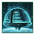
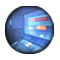
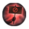
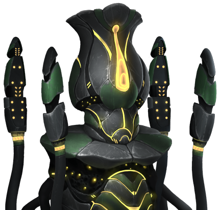
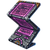

Empire

An empire is a galactic power controlling at least one system and typically seeking to expand its influence across the stars. The ethics, authority, and civics shape their policies and behavior. Interactions between empires occur through diplomacy, trade, or warfare.
It should be noted that the name of the player empire and its government structure can always be changed in the government window.
Capital
The capital is the ruling seat of an empire and can be moved once every 10 years for a cost of 250  influence if the empire is at peace. An empire's capital planet and system are marked by gold star corners on the system and galaxy maps. The capital has its own set of unique designations.
influence if the empire is at peace. An empire's capital planet and system are marked by gold star corners on the system and galaxy maps. The capital has its own set of unique designations.
Gameplay type
There are two types of empires: Settled and Nomadic. Empires can only integrate their subjects if they share the same gameplay type. Nomadic empires are only available with the  Nomads DLC.
Nomads DLC.
Independent empires can change gameplay type if they finish the  Adaptability or
Adaptability or  Versatility tradition tree as long as they are not genocidal and do not have an origin that prevents Nomadic starts or settling or the
Versatility tradition tree as long as they are not genocidal and do not have an origin that prevents Nomadic starts or settling or the  Cosmogenesis ambition. When gameplay type is changed all
Cosmogenesis ambition. When gameplay type is changed all  Pops and buildings in the main district of the planet or arkship that were used to change gameplay type as well as all landed armies are transferred to the new capital.
Pops and buildings in the main district of the planet or arkship that were used to change gameplay type as well as all landed armies are transferred to the new capital.
Gameplay Mechanic |
Settled | Nomadic |
|---|---|---|
| Ownership | Borders created by starbases | Waylines created by waystations |
| Colonies | Planets and habitable megastructures | Arkships |
| Builder | Construction ships (no limit) | Logistic ships (limit) |
| Deposit extraction | Mining stations and research stations | Arkships, logistic ships and waystations |
| Building resource | Minerals | Refined resources |
| Energy and Minerals | Remain separate resources | Become Operational Reserves |
| Empire size | Additional per owned system | Double from districts and colonies |
| Guaranteed habitable worlds | Planets of the same class | Systems with high deposits |
| Contracts | Can issue | Can accept |
| Claims | Yes | No |
| Sectors | Yes | No |
| Megastructures | All | Some |
| Conquered planets | Gain control | Become subjects |
| Needs border access | Yes | No |
| Specialist subjects | Yes | No |
| Unowned archaeological sites | Require Frontier Archaeology tradition | Can always excavate |
| Tutorial | Yes | No |
| Player bonuses (doesn't apply to AI) | Habitable Worlds Survey event chain | Arkship Readiness objectives |
Nomadic empires also have an expanded list of starting solar systems to select from.
Sector systems
Sectors are administrative regions within a settled empire. Every empire starts with a core sector, with the homeworld as the sector (and empire) capital. All sectors extend up to four hyperlanes away from the sector capital. All contiguous systems within that range are included in the sector; sectors cannot extend across systems that belong to a different sector, a different empire, or are unowned. Sectors also cannot extend through wormholes or gateways. Each sector can have a leader assigned to it, applying their level effects and traits to all colonies in the sector. Any colony which is not in a sector can be selected as the sector capital of a new sector, with the planet becoming marked by blue star corners on the system and galaxy maps. The new sector immediately adds all contiguous systems up to four hyperlanes away to itself.
It is also possible to change a sector capital to a new colony at any time at no cost. This immediately updates the sector's contained systems as if creating a new sector. Changing the core sector's capital requires moving the empire capital with the usual cost to do so.
Sectors of empires that are not  Gestalt Consciousness or
Gestalt Consciousness or  Fanatic Purifiers can be turned into a subject empire. The new empire will have the same ethics, authority, civics and technologies but not sovereign civics.
Fanatic Purifiers can be turned into a subject empire. The new empire will have the same ethics, authority, civics and technologies but not sovereign civics.
Embarking
|
|
Available only with the Nomads DLC enabled. |
Settled empire can change to Nomadic via the  Embark decision. When the decision is complete the empire will have to choose which type of arkship to use. The planet where the decision was taken will be decolonized and gain the
Embark decision. When the decision is complete the empire will have to choose which type of arkship to use. The planet where the decision was taken will be decolonized and gain the 
 Stripped World modifier and 90
Stripped World modifier and 90  Devastation. All systems without a waystation will receive one.
Devastation. All systems without a waystation will receive one.
If a player embarks and has more than one world then it will be asked to choose whether to continue playing as the Settled or Nomadic empire and the other empire will become a subject. Both empires will receive a science ship and construction ship if they lack one.
If the player chooses to continue playing as the Nomadic empire all megastructures that can be built by such empires are kept while other megastructures are transferred to the subject or abandoned if only one planet was owned.
Settling
|
|
Available only with the Nomads DLC enabled. |
Nomadic empires can chance to Settled by ordering an arkship to settle on a habitable world, which costs 250  Influence and will cancel all accepted contracts. If the empire has at least 2 arkships and is not genocidal it will receive the following choices, otherwise it will only receive the first choice:
Influence and will cancel all accepted contracts. If the empire has at least 2 arkships and is not genocidal it will receive the following choices, otherwise it will only receive the first choice:
- Settle with all arkships. All arkships will be scuttled and the empire's
 Pops are be transferred to the world. All waystations in unowned systems are converted into outposts and all logistics ships are converted into construction ships. If the empire had multiple arkship every additional arkship will give between 1000 and 2000
Pops are be transferred to the world. All waystations in unowned systems are converted into outposts and all logistics ships are converted into construction ships. If the empire had multiple arkship every additional arkship will give between 1000 and 2000  Minerals and
Minerals and  Alloys depending on tier.
Alloys depending on tier. - Turn the arkship into a Settled subject with the
 Planetfallen origin. Only the arkship that performed the order is scuttled and only its Pops are transferred to the world. Logistics ships are not converted but the subject will receive a construction ship. All waystations in unowned systems that are up to 4 hyperlanes away from the settled world are converted into outposts of the subject.
Planetfallen origin. Only the arkship that performed the order is scuttled and only its Pops are transferred to the world. Logistics ships are not converted but the subject will receive a construction ship. All waystations in unowned systems that are up to 4 hyperlanes away from the settled world are converted into outposts of the subject. - Settle with the arkship and give all other arkships and logistics ship to a Nomadic subject. Only the arkship that performed the order is scuttled and only its Pops are transferred to the world. All waystations in unowned systems that are up to 4 hyperlanes away from the settled world are converted into outposts and the rest transferred to the subject. A construction ship will be created.
When the empire becomes Settled the world will gain the  Arkship Remains modifier, all celestial objects in the system that have a deposit will gain a mining or research stationm and all resources stored in waystations will be added to the empire storage. If the empire researched the Improved Wayline Logistics technology it will gain the
Arkship Remains modifier, all celestial objects in the system that have a deposit will gain a mining or research stationm and all resources stored in waystations will be added to the empire storage. If the empire researched the Improved Wayline Logistics technology it will gain the  Starhold technology and if it also researched the Advanced Wayline Logistics technology it will gain the
Starhold technology and if it also researched the Advanced Wayline Logistics technology it will gain the  Star Fortress technology. If the arkship had the
Star Fortress technology. If the arkship had the
{kind=link}
{kind=link}
{kind=link}
{kind=link}
Subjects generated by settling start with 100  Loyalty, 200
Loyalty, 200  Opinion, 100
Opinion, 100  Intel, and all the empire's technologies and ascension perks except for ambitions. They will be
Intel, and all the empire's technologies and ascension perks except for ambitions. They will be  Vassals for most empires but
Vassals for most empires but  Corporate nomads will create
Corporate nomads will create  Subsidiary subjects and
Subsidiary subjects and  Inward Perfection nomads will create
Inward Perfection nomads will create  Tributary subjects.
Tributary subjects.
Arkship readiness
|
|
Available only with the Nomads DLC enabled. |
Nomadic empires start the game with the objective to harvest  Exotic Gases,
Exotic Gases,  Volatile Motes and
Volatile Motes and  Rare Crystals. Completing it gives +5% Resources from Harvesting Actions for 10 years. They also start the game with two of the following penalties:
Rare Crystals. Completing it gives +5% Resources from Harvesting Actions for 10 years. They also start the game with two of the following penalties:
| Penalty | Removal | Removal rewards |
|---|---|---|
| Flush Coolant decision |
| |
 |
Survey 4 star classes |
|
| ||
| ||
|
{kind=link}
{kind=link}
{kind=link}
{kind=link}
{kind=link}
Empire size
 Empire size represents the increasing difficulties of managing a large empire. The Empire size value and its effect are affected by a lot of modifiers, as noted in the tables below.
Empire size represents the increasing difficulties of managing a large empire. The Empire size value and its effect are affected by a lot of modifiers, as noted in the tables below.
Empire size affects several mechanics, typically increasing the cost to perform certain actions.
Specifically, each point of  empire size above 100 has the following effects:
empire size above 100 has the following effects:
 +0.2% Technology cost
+0.2% Technology cost +0.2% Tradition cost
+0.2% Tradition cost +1% edict cost
+1% edict cost +10 unity cost to reform the empire's government
+10 unity cost to reform the empire's government- +10 plus +6 per planetary ascension tier unity cost to increase planetary ascension tier
 +0.25 infiltration daily for other empires building a spy network
+0.25 infiltration daily for other empires building a spy network +0.5 naval capacity use required to maintain power projection
+0.5 naval capacity use required to maintain power projection- +0.1% Progress points needed to launch an Agenda
- +0.5% Grand Archive specimen upkeep
 Empire size is increased by each of the following owned by the empire:
Empire size is increased by each of the following owned by the empire:
| Source | Size |
|---|---|
| System | 1 |
| Colony | 20 |
| Branch offices | 5 |
| 100 Pops | 0.5 |
| District | 0.5 |
Each of these categories is affected by its own set of modifiers:
| Source | Type | Scope | Empire size | ||||
|---|---|---|---|---|---|---|---|
| Pops | Districts | Colonies | Systems | Branch offices | |||
| Imperial Prerogative ascension perk | Ascension perk | Empire | −25% | ||||
| Interstellar Dominion ascension perk | Ascension perk | Empire | −25% | ||||
| Authority | Empire | +200% | +200% | ||||
| Authority | Empire | +50% | |||||
| Oligarchic Supervision authority | Authority | Empire | −10% | −50% | |||
Bio-Magnates authority Apex Principate authority Deathless Dynasty authority BioPredation GLC authority |
Authority | Pop | −1% for each trait the founder species has |
||||
| Memory Aggregator authority | Authority | Empire | −10% | ||||
| Democratic Concurrency authority | Authority | Empire | −10% | ||||
| Authority | Empire | −10% | |||||
| Authority | Empire | −10% | |||||
| Adaptive Dominion authority | Authority | Empire | −10% | ||||
| BioPredation GLC authority | Authority | Empire | +50% | ||||
| Authority | Pop | −10% | |||||
| Transcendant Ethermind authority | Authority | Empire | −10% | ||||
| Civic | Empire | −50% | −25% | ||||
Sovereign Guardianship civic |
Civic | Empire | −25% | −50% | +75% | +150% | +100% |
| Civic | Empire | −10% | |||||
| Civic | Empire | −10% | |||||
| Civic | Empire | −10% | |||||
| Ethic | Empire | −20% | |||||
| Ethic | Empire | −10% | |||||
| Resolution | Empire | +5% | |||||
| Resolution | Empire | +5% | +15% | ||||
| Resolution | Empire | +15% | +25% | ||||
| Resolution | Empire | −10% | |||||
| Resolution | Empire | −10% | |||||
| Resolution | Empire | +2% | |||||
| Empire modifier | Empire | −25% | |||||
| Empire modifier | Empire | −10% | |||||
| Governor | Empire | −75% for planet −37.5% for sector |
|||||
| Councilor | Empire | −3.5% | |||||
| Councilor | Pop | −2% for slaves | |||||
| Councilor | Empire | −5% | |||||
| Councilor | Empire | +5% | |||||
| Councilor | Empire | +15% | |||||
| Governor | Pop | −2% for planet −1% for sector |
|||||
 |
Planet modifier | Colony | −50% | ||||
(boosted by Ascension effect) |
Ascension | Colony | −5% to −8,5% per tier
Up to −85% at tier 10 |
−5% to −8,5% per tier
Up to −85% at tier 10 |
−5% to −8,5% per tier
Up to −85% at tier 10 |
||
| Councilor | Empire | −1% per level | |||||
| Ruler trait | Empire | −5% | |||||
| Ruler trait | Empire | −5% | |||||
| Technology | Empire | −5% | |||||
| Technology | Empire | −30% | |||||
| Tradition | Empire | −50% | |||||
| Tradition | Empire | −5% | |||||
| Tradition | Empire | −25% | |||||
| Tradition | Empire | −10% | +100% | ||||
| Tradition | Empire | −15% | −15% | ||||
| Tradition | Empire | −15% | |||||
| Tradition | Empire | −5% | |||||
| Tradition | Empire | −5% | |||||
| Tradition | Pop | −10% |
|||||
| Tradition | Empire | −10% | |||||
| Tradition | Empire | −25% | −25% | ||||
| Species trait | Pop | −10% | |||||
| Species trait | Pop | −10% | |||||
| Species trait | Pop | +10% | |||||
| Species trait | Pop | +10% | |||||
| Species trait | Pop | +10% | |||||
{kind=link}
The sum total of empire size is also affected by the following modifiers:
| Source | Amount |
|---|---|
| Interstellar Assembly (Completed) | −10% |
| −5% | |
| Administrator Beryllia empire modifier | −5% |
| +10% | |
| +10% |
Each scope is a different category of size modifier, and all groups are additive within themselves, but multiplicative between each other. As an example, 100 pops with the  Docile trait on a planet governed by a level 1 governor in a
Docile trait on a planet governed by a level 1 governor in a  Fanatic Pacifist empire with
Fanatic Pacifist empire with  Beacon of Liberty with 2 levels of planetary ascension on all colonies with no planetary ascension bonuses will each contribute the following to the empire size:
Beacon of Liberty with 2 levels of planetary ascension on all colonies with no planetary ascension bonuses will each contribute the following to the empire size:
Failed to parse (SVG (MathML can be enabled via browser plugin): Invalid response ("Math extension cannot connect to Restbase.") from server "https://en.wikipedia.org/api/rest_v1/":): {\displaystyle \begin{align} \text{Total} & = \text{Base} & \times (1 - & \text{Pop scope modifiers}) & \times (1 - & \text{Empire scope modifiers}) & \times (1 - & \text{Colony scope modifier}) \\ & = 0.5 & \times (1 - & [0.10 + 0.02]) & \times (1 - & [0.30 + 0.15]) & \times (1 - & [0.1]) \\ 0.2178 & = 0.5 & \times 0.88 & & \times 0.55 & & \times 0.9 \end{align}}
Empire focus
{kind=link}
Empire focuses are three progression trees that grant bonus research options once enough progress has been made. Each empire can set one of its focuses as the empire focus to increase the chance of receiving tasks for that focus. Changing the empire focus costs 50  Unity and can only be done once every year.
Unity and can only be done once every year.
{kind=link}
{kind=link}
{kind=link}
{kind=link}
Progress towards empire focuses is made by completing tasks. Each empire has 5 simultaneous tasks and each task can only appear once. One task can be replaced each year at the cost of 100  Unity. Each time a new task is added, there is a 33% chance to be a Core task, a 44% chance to match the empire focus, and a 22% chance to match one of the other two focuses. Tasks come in 5 difficulties. To unlock a difficulty, half of the tasks from the previous difficulty must be completed.
Unity. Each time a new task is added, there is a 33% chance to be a Core task, a 44% chance to match the empire focus, and a 22% chance to match one of the other two focuses. Tasks come in 5 difficulties. To unlock a difficulty, half of the tasks from the previous difficulty must be completed.
- Difficulty 1 tasks give 10 progress to their focus
- Difficulty 2 tasks give 25 progress to their focus
- Difficulty 3 tasks give 50 progress to their focus
- Difficulty 4 tasks give 100 progress to their focus
- Difficulty 5 tasks give 200 progress to their focus
Core tasks
All core tasks have a difficulty of 1 and grant 10 progress towards all empire focuses.
- Activate an edict
- Adopt a tradition
- Build a building
- Build a certain type of district
- Build a starbase building (replacing the starting one doesn't count)
- Build a starbase module (replacing the starting one doesn't count)
- Complete 3 agendas
- Enact a planetary decision
- Have 1000 of a basic or advanced resource the empire uses
- Set colony designation (other than the capital)
- Build a mining station (settled only)
- Found a colony (settled only)
- Establish a branch office (
 Corporate authority only)
Corporate authority only) - Build a waystation (
 Nomadic only)
Nomadic only)
Complete contracts
|
|
Available only with the Nomads DLC enabled. |
 Nomadic empires receive an additional set of core tasks to complete contracts. These tasks give greater rewards than regular core tasks:
Nomadic empires receive an additional set of core tasks to complete contracts. These tasks give greater rewards than regular core tasks:
- Completing 1 contract gives 10 progress towards all empire focuses
- Completing 3 contracts gives 50 progress towards all empire focuses
- Completing 7 contracts gives 100 progress towards all empire focuses
- Completing 15 contracts gives 200 progress towards all empire focuses
Exploration tasks
{kind=link}
{kind=link}
{kind=link}
{kind=link}
{kind=link}
Conquest tasks
Development tasks
Tasks that require diplomacy will not appear for empires that are Genocidal or have the  Inward Perfection civic.
Inward Perfection civic.
Relative power
Relative Power is a measure of how much empires are ahead of one another in terms of resource production, fleet power or researched technologies. A Relative Power of Superior/Inferior means that an empire has 50% more (1.5x) resource production, fleet power or researched technologies and a Relative Power of Overwhelming/Pathetic means that an empire has 150% more (2.5x) resource production, fleet power or researched technologies.
Relative Power is split into three categories: Fleet Power, Economic Power and Technology Level.
Fleet Power: The combined fleet power of every owned fleet.
- +1 per 1 Fleet Power
Economic Power: A weighted sum of all monthly income, including income from trade agreements. Monthly spending is not part of this score. The various resources are weighted the same as their base market price (base energy price for 1 unit):
- +1 per
 Energy, Minerals or
Energy, Minerals or  Food
Food - +2 per
 Consumer Goods
Consumer Goods - +4 per Alloys
- +10 per


 common strategic resources
common strategic resources - +20 per


 rare strategic resources
rare strategic resources
Counter-intuitively,  Trade Value income does not factor into economic power at all.
Trade Value income does not factor into economic power at all.  Nanites also have 0 weight despite being a rare strategic resource.
Nanites also have 0 weight despite being a rare strategic resource.
Technology Level: 60 + the combined base Tech Cost of all researched technologies, divided by 100. Repeatables only count 0.33x as much as regular technologies.
- +60 Base Technology Level
- +0.01 per 1 base
 Tech Cost of all researched technologies, including repeatable technologies
Tech Cost of all researched technologies, including repeatable technologies
The formula to calculate the overall power of an empire is: Failed to parse (SVG (MathML can be enabled via browser plugin): Invalid response ("Math extension cannot connect to Restbase.") from server "https://en.wikipedia.org/api/rest_v1/":): {\displaystyle \text{Overall Power} = \text{Fleet Power} * 2 + \text{Economic Power} * 3 + \text{Technology Level} * 1}
Victory score
Victory score tallies an empire's total accomplishment. The empire that has the highest score when the Victory Year arrives is declared winner. The Victory Year is configurable and can be disabled altogether. An empire will always declare victory, if it's the only one that can do so. All players may continue the game session normally even after an empire declares victory and the victory is, in practical terms, of little concern.
The Victory Window shows a total score for each empire and its ranking, as well as a breakdown by category. The categories are as follows:
Economic Strength: +1 per 1 Economic Power based on Relative Power OR +5000 if the Empire has no economy.
Technology Level: 60 +0.25 per 1 Technology Level over 60 based on Relative Power
Number of Systems: +10 per system
Number of Colonies: +50 per colony
Number of Pops: +2 per pop, regardless of type
Subject Empires: +50% of a subject empire's score is given to the overlord
Federation: +10% of each other federation member's score is shared by all federation members
Crisis Ships Killed: +10 per crisis ship destroyed
Relics Collected: Each Relic grants a large amount of score. The score of each Relic is shown on the Relics page.
Unique empires
The following empires can appear during the game as a result of certain events. The species' climate preference will always match its homeworld. While not available as a start option for players, unique empires are playable by switching to them either via temporarily loading a save in multiplayer, receiving a game over, or achieving Cosmogenesis victory. Unique empires generated after the start of the game will have all technologies researched by the player.
| Empire name | Species | Traits | Homeworld and origin | Government | Ethics | Requirements |
|---|---|---|---|---|---|---|
| Awoken |  Awoken |
|
|
|
Limbo event chain outcome | |
| Larionessi Consciousness | Larionessi |
|
|
|
The Signal archaeology site | |
| Nivlac |
|
|
|
|
Impossible Organism event chain outcome | |
|
|
|
Ancient Robot World archaeology site | |||
| Subterranean Empire |
|
|
|
|
Subterranean Civilization event chain outcome | |
| Namaria |
|
|
|
|
Galactic Nomads offer | |
| Daemonic Incursion | Daemon |
|
|
|
|
|
| Ketling Star Pack | Ketling |
|
|
|
|
|
| Prikkiki-Ti | Prikki |
|
|
|
|
|
| Habinte |
|
|
|
|||
|
|
|
||||
| The Formless | The Formless |
|
|
|
|
{kind=link}
{kind=link}
{kind=link}
{kind=link}
{kind=link}
{kind=link}
{kind=link}
{kind=link}
{kind=link}
{kind=link}
{kind=link}
{kind=link}
{kind=link}
{kind=link}
{kind=link}
{kind=link}
Imperial Fiefdom empires
|
|
Available only with the Overlord DLC enabled. |
The  Imperial Fiefdom origin will generate a unique overlord and between 1 and 4 unique vassals depending on galaxy size. 40-65 years after the game start, the overlord will break into three separate empires at war with each other and the vassals will become independent. If they have Inferior or Pathetic relative power towards the origin empire they will offer to become a subject. Accepting will grant a small reward.
Imperial Fiefdom origin will generate a unique overlord and between 1 and 4 unique vassals depending on galaxy size. 40-65 years after the game start, the overlord will break into three separate empires at war with each other and the vassals will become independent. If they have Inferior or Pathetic relative power towards the origin empire they will offer to become a subject. Accepting will grant a small reward.
| Empire | Homeworld class | Government | Ethics | Diplomatic policies | Subjugation reward | Min. galaxy size |
|---|---|---|---|---|---|---|
|
|
|
Tiny | |||
|
|
|
Tiny | |||
|
|
|
Small | |||
|
|
|
Medium | |||
|
|
|
Large |
Minamar Specialized Industries
{kind=link}
|
|
Available only with the First Contact DLC enabled. |
Minamar Specialized Industries (or MSI for short) is an empire created by the  Broken Shackles and
Broken Shackles and  Payback origins. For the most part, it works like any regular empire with an advanced start, the only thing setting them apart being the
Payback origins. For the most part, it works like any regular empire with an advanced start, the only thing setting them apart being the  Your Ladder To The Sky origin and their Benevolent Corporation AI personality. It has
Your Ladder To The Sky origin and their Benevolent Corporation AI personality. It has  Fanatic Materialist and
Fanatic Materialist and  Authoritarian ethics and uses
Authoritarian ethics and uses  Corporate authority and
Corporate authority and  Indentured Assets and
Indentured Assets and  Public Relations Specialists civics regardless of whether
Public Relations Specialists civics regardless of whether  MegaCorp is installed or not. Their founder species' name is Olinbar, they are
MegaCorp is installed or not. Their founder species' name is Olinbar, they are  Organic and have
Organic and have  Tomb World preference,
Tomb World preference,  Charismatic,
Charismatic,  Intelligent,
Intelligent,  Decadent and
Decadent and  Wasteful traits, and uses a unique species portrait not available to the player empires. Their homeworld is a
Wasteful traits, and uses a unique species portrait not available to the player empires. Their homeworld is a  Relic World named Minamar, in the Paraga system.
Relic World named Minamar, in the Paraga system.
Empires with the  Broken Shackles and
Broken Shackles and  Payback origins have a permanent −1000
Payback origins have a permanent −1000  Opinion penalty towards and from Minamar Specialized Industries and cannot choose the
Opinion penalty towards and from Minamar Specialized Industries and cannot choose the  Proactive first contact dialogue option with them. The homeworld of Minamar Specialized Industries will contain enslaved pops from both empires' species.
Proactive first contact dialogue option with them. The homeworld of Minamar Specialized Industries will contain enslaved pops from both empires' species.
Broken Shackles interactions
Empires with the  Broken Shackles origin have the following interactions with Minamar Specialized Industries:
Broken Shackles origin have the following interactions with Minamar Specialized Industries:
- Encountering Minamar Specialized Industries gives −10
 Stability until First Contact is completed.
Stability until First Contact is completed. - Completing First Contact with Minamar Specialized Industries gives +10% Unity for 10 years.
- If forced into a Federation with Minamar Specialized Industries, the empire will receive −10%
 Happiness and −25%
Happiness and −25%  Governing Ethics Attraction for 10 years.
Governing Ethics Attraction for 10 years. - If at war against Minamar Specialized Industries, the empire will receive +10% Unity, −10%
 Ship Upkeep, −50%
Ship Upkeep, −50%  Army Upkeep, −50% Army Cost and +100%
Army Upkeep, −50% Army Cost and +100%  Army Build Speed
Army Build Speed
- If the war ends in surrender, the empire will receive −10% Happiness for 10 years
- If the war ends in status quo, the empire will receive −5% Happiness for 10 years
- If the war ends in enforcing demands, the empire will receive +10% Happiness, +15% Unity, +20% Governing Ethics Attraction, +10% Monthly Consumer Goods, +5%
 Monthly Resources and +10% Specialist Pop Resource Output for 10 years
Monthly Resources and +10% Specialist Pop Resource Output for 10 years
- If the war ends in surrender, the empire will receive −10%
Payback interactions
Empires with the  Payback origin have the following interactions with Minamar Specialized Industries:
Payback origin have the following interactions with Minamar Specialized Industries:
- If the empire has a shortage situation after establishing communications with Minamar Specialized Industries, it will gain the option between receiving a significant amount of the deficit resource or a small amount of Unity. This can only happen once every 5 years.
- The first time the empire technologically enlightens a pre-FTL civilization after establishing communications with Minamar Specialized Industries, the empire will gain a choice between the Certified Educator empire modifier or a large amount of Unity.
- The first time the empire kills a guardian after establishing communications with Minamar Specialized Industries, it will gain a choice between a large amount of Energy or a small amount of Unity.
- As long as the empire isn't at war with Minamar Specialized Industries, they will ask the empire to pay 5000 Energy, 10000 Energy or 600 Pops every 15 years (paying the full amount at once is impossible, if using console commands to have unlimited resources, the collectors will recognize and refuse to accept them). The empire will have 2 ways to approach them. Winning with either approach will end all interactions with Minamar Specialized Industries. If
 Grand Archive is installed the warning about debt collectors will also include the
Grand Archive is installed the warning about debt collectors will also include the 
Reparation Invoice specimen.- After paying 2 times, the empire will get a choice between the Payback casus belli or focusing on diplomacy.
- If focusing on diplomacy, then 10 days after the empire joins the
 Galactic Community, an event named A War Without Weapons will fire, giving an objective choice between passing the Equal Standing Act or Non-Interference Act
Galactic Community, an event named A War Without Weapons will fire, giving an objective choice between passing the Equal Standing Act or Non-Interference Act  Pre-FTL Stance resolution, as well as all minor sanction resolutions. Passing the required Pre-FTL Stance resolution will grant a large amount of Unity. Passing all required resolutions will grant even more Unity and the Rightful Due empire modifier while Minamar Specialized Industries will gain a Planetary Revolt situation and the Angered Populace empire modifier.
Pre-FTL Stance resolution, as well as all minor sanction resolutions. Passing the required Pre-FTL Stance resolution will grant a large amount of Unity. Passing all required resolutions will grant even more Unity and the Rightful Due empire modifier while Minamar Specialized Industries will gain a Planetary Revolt situation and the Angered Populace empire modifier.
- Alternatively, winning a war against MSI with the Impose Ideology wargoal (as any empire) that causes MSI to outlaw slavery and aggressive Pre-FTL interference (by shifting them to egalitarian and xenophile), will give the same result.
- If the empire chose the Payback casus belli, then defeating Minamar Specialized Industries in war (whether with the Payback casus belli or not) will grant the choice between the Free From Strife empire modifier or unlocking the Punishment casus belli and Stop Atrocities wargoal.
- If focusing on diplomacy, then 10 days after the empire joins the
- Refusing to pay will cause a debt collector fleet to attack the capital system. The fleets can be defeated relatively easily but defeating them 3 times will result in Minamar Specialized Industries declaring war with the Animosity casus belli (this will occur even if communications haven't been established with MSI). If already a subject of Minamar Specialized Industries, they will impose harsher terms of agreement.
- After paying 2 times, the empire will get a choice between the Payback casus belli or focusing on diplomacy.
- If Minamar Specialized Industries is destroyed by an endgame crisis, the empire will gain the Underdog permanent modifier against endgame crisis factions.
 If Minamar Specialized Industries is destroyed by the Great Khan, the empire will gain the Underdog permanent modifier against marauders and pirates.
If Minamar Specialized Industries is destroyed by the Great Khan, the empire will gain the Underdog permanent modifier against marauders and pirates.
References
| Exploration | Exploration • FTL • Unique systems • L-Cluster • Pre-FTL species • Fallen empire • Spaceborne aliens • Enclaves • Guardians • Marauders • Caravaneers |
| Celestial bodies | Celestial body • Colonization • Planetary features • Planet modifiers |
| Discovery | Discovery • Anomaly • Archaeological site • Astral rift • Relics • Collection |
| Species | Species • Pop modification • Biological traits • Machine traits • Population • Species rights • Ethics |
| Leaders | Leader • Common leader traits • Commander traits • Official traits • Scientist traits • Paragons |
| Governance | Empire • Origin • Government • Civics • Council • Policies • Edicts • Factions • Traditions • Ascension perks • Ambition • Situations |
| Economy | Resources • Planetary management • Districts • Jobs • Designation • Trade • Megastructures • Waystation |
| Buildings | Planet capital • Common buildings • Planet unique • Empire unique • Holdings |
| Ships | Ship • Arkship • Ship designer • Core components • Weapon components • Utility components • Mutations • Offensive mutations |
| Technology | Technology • Physics research • Society research • Engineering research |
| Diplomacy | Diplomacy • Relations • Galactic community • Federations • Subject empires • Intelligence • Contracts • AI personalities |
| Warfare | Warfare • Space warfare • Land warfare • Starbase • Crisis |
| Others | Events • The Shroud • Preset empires • AI players • Stat modifiers • Console commands • Easter eggs |